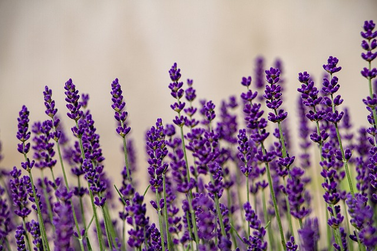

introduction
Here's a simple guide to help you plant and care for lavender.
By following these steps, you can successfully plant and grow lavender in your garden.
With minimal care, lavender will reward you with its beautiful blooms and delightful fragrance year after year.
| Flower | Color | |
|---|---|---|
| plant | Lavender | Perpele |
| this is just a test | ||